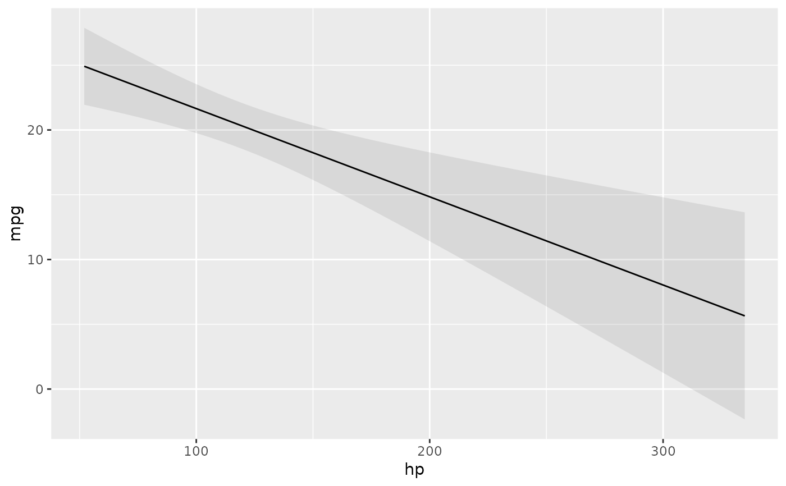

Outcome predicted by a fitted model on a specified scale for a given combination of values of the predictor variables, such as their observed values, their means, or factor levels (a.k.a. "reference grid").
predictions(): unit-level (conditional) estimates.avg_predictions(): average (marginal) estimates.
The newdata argument and the datagrid() function can be used to control where statistics are evaluated in the predictor space: "at observed values", "at the mean", "at representative values", etc.
See the predictions vignette and package website for worked examples and case studies:
Usage
predictions(
model,
newdata = NULL,
variables = NULL,
vcov = TRUE,
conf_level = 0.95,
type = NULL,
by = FALSE,
byfun = NULL,
wts = NULL,
transform_post = NULL,
hypothesis = NULL,
df = Inf,
...
)
avg_predictions(
model,
newdata = NULL,
variables = NULL,
vcov = TRUE,
conf_level = 0.95,
type = NULL,
by = TRUE,
byfun = NULL,
wts = NULL,
transform_post = NULL,
hypothesis = NULL,
df = Inf,
...
)Arguments
- model
Model object
- newdata
Grid of predictor values at which we evaluate predictions.
NULL(default): Predictions for each observed value in the original dataset.data frame: Predictions for each row of the
newdatadata frame.string:
"mean": Predictions at the Mean. Predictions when each predictor is held at its mean or mode.
"median": Predictions at the Median. Predictions when each predictor is held at its median or mode.
"marginalmeans": Predictions at Marginal Means. See Details section below.
"tukey": Predictions at Tukey's 5 numbers.
"grid": Predictions on a grid of representative numbers (Tukey's 5 numbers and unique values of categorical predictors).
datagrid()call to specify a custom grid of regressors. For example:newdata = datagrid(cyl = c(4, 6)):cylvariable equal to 4 and 6 and other regressors fixed at their means or modes.See the Examples section and the
datagrid()documentation.
- variables
Counterfactual variables.
Output:
predictions(): The entire dataset is replicated once for each unique combination ofvariables, and predictions are made.avg_predictions(): The entire dataset is replicated, predictions are made, and they are marginalized byvariablescategories.Warning: This can be expensive in large datasets.
Warning: Users who need "conditional" predictions should use the
newdataargument instead ofvariables.
Input:
NULL: computes one prediction per row ofnewdataCharacter vector: the dataset is replicated once of every combination of unique values of the variables identified in
variables.Named list: names identify the subset of variables of interest and their values. For numeric variables, the
variablesargument supports functions and string shortcuts:A function which returns a numeric value
Numeric vector: Contrast between the 2nd element and the 1st element of the
xvector."iqr": Contrast across the interquartile range of the regressor.
"sd": Contrast across one standard deviation around the regressor mean.
"2sd": Contrast across two standard deviations around the regressor mean.
"minmax": Contrast between the maximum and the minimum values of the regressor.
"threenum": mean and 1 standard deviation on both sides
"fivenum": Tukey's five numbers
- vcov
Type of uncertainty estimates to report (e.g., for robust standard errors). Acceptable values:
FALSE: Do not compute standard errors. This can speed up computation considerably.
TRUE: Unit-level standard errors using the default
vcov(model)variance-covariance matrix.String which indicates the kind of uncertainty estimates to return.
Heteroskedasticity-consistent:
"HC","HC0","HC1","HC2","HC3","HC4","HC4m","HC5". See?sandwich::vcovHCHeteroskedasticity and autocorrelation consistent:
"HAC"Mixed-Models degrees of freedom: "satterthwaite", "kenward-roger"
Other:
"NeweyWest","KernHAC","OPG". See thesandwichpackage documentation.
One-sided formula which indicates the name of cluster variables (e.g.,
~unit_id). This formula is passed to theclusterargument of thesandwich::vcovCLfunction.Square covariance matrix
Function which returns a covariance matrix (e.g.,
stats::vcov(model))
- conf_level
numeric value between 0 and 1. Confidence level to use to build a confidence interval.
- type
string indicates the type (scale) of the predictions used to compute contrasts or slopes. This can differ based on the model type, but will typically be a string such as: "response", "link", "probs", or "zero". When an unsupported string is entered, the model-specific list of acceptable values is returned in an error message. When
typeisNULL, the default value is used. This default is the first model-related row in themarginaleffects:::type_dictionarydataframe. See the details section for a note on backtransformation.- by
Aggregate unit-level estimates (aka, marginalize, average over). Valid inputs:
FALSE: return the original unit-level estimates.TRUE: aggregate estimates for each term.Character vector of column names in
newdataor in the data frame produced by calling the function without thebyargument.Data frame with a
bycolumn of group labels, and merging columns shared bynewdataor the data frame produced by calling the same function without thebyargument.See examples below.
- byfun
A function such as
mean()orsum()used to aggregate estimates within the subgroups defined by thebyargument.NULLuses themean()function. Must accept a numeric vector and return a single numeric value. This is sometimes used to take the sum or mean of predicted probabilities across outcome or predictor levels. See examples section.- wts
string or numeric: weights to use when computing average contrasts or slopes. These weights only affect the averaging in
avg_*()or with thebyargument, and not the unit-level estimates themselves.string: column name of the weights variable in
newdata. When supplying a column name towts, it is recommended to supply the original data (including the weights variable) explicitly tonewdata.numeric: vector of length equal to the number of rows in the original data or in
newdata(if supplied).
- transform_post
(experimental) A function applied to unit-level adjusted predictions and confidence intervals just before the function returns results. For bayesian models, this function is applied to individual draws from the posterior distribution, before computing summaries.
- hypothesis
specify a hypothesis test or custom contrast using a numeric value, vector, or matrix, a string, or a string formula.
Numeric:
Single value: the null hypothesis used in the computation of Z and p (before applying
transform_post).Vector: Weights to compute a linear combination of (custom contrast between) estimates. Length equal to the number of rows generated by the same function call, but without the
hypothesisargument.Matrix: Each column is a vector of weights, as describe above, used to compute a distinct linear combination of (contrast between) estimates. The column names of the matrix are used as labels in the output.
String formula to specify linear or non-linear hypothesis tests. If the
termcolumn uniquely identifies rows, terms can be used in the formula. Otherwise, useb1,b2, etc. to identify the position of each parameter. Examples:hp = drathp + drat = 12b1 + b2 + b3 = 0
String:
"pairwise": pairwise differences between estimates in each row.
"reference": differences between the estimates in each row and the estimate in the first row.
"sequential": difference between an estimate and the estimate in the next row.
"revpairwise", "revreference", "revsequential": inverse of the corresponding hypotheses, as described above.
See the Examples section below and the vignette: https://vincentarelbundock.github.io/marginaleffects/articles/hypothesis.html
- df
Degrees of freedom used to compute p values and confidence intervals. A single numeric value between 1 and
Inf. WhendfisInf, the normal distribution is used. Whendfis finite, thetdistribution is used. See insight::get_df for a convenient function to extract degrees of freedom. Ex:slopes(model, df = insight::get_df(model))- ...
Additional arguments are passed to the
predict()method supplied by the modeling package.These arguments are particularly useful for mixed-effects or bayesian models (see the online vignettes on themarginaleffectswebsite). Available arguments can vary from model to model, depending on the range of supported arguments by each modeling package. See the "Model-Specific Arguments" section of the?marginaleffectsdocumentation for a non-exhaustive list of available arguments.
Value
A data.frame with one row per observation and several columns:
rowid: row number of thenewdatadata frametype: prediction type, as defined by thetypeargumentgroup: (optional) value of the grouped outcome (e.g., categorical outcome models)estimate: predicted outcomestd.error: standard errors computed using the delta method.conf.low: lower bound of the confidence interval (or equal-tailed interval for bayesian models)conf.high: upper bound of the confidence interval (or equal-tailed interval for bayesian models)
Details
The newdata argument, the tidy() function, and datagrid() function can be used to control the kind of predictions to report:
Average Predictions
Predictions at the Mean
Predictions at User-Specified values (aka Predictions at Representative values).
For glm() and Gam() models with type=NULL (the default), predictions() first predicts on the link scale, and then backtransforms the estimates and confidence intervals. This implies that the estimate produced by avg_predictions() will not be exactly equal to the average of the estimate column produced by predictions(). Users can circumvent this behavior and average predictions directly on the response scale by setting type="response" explicitly.
For models other than glm() and Gam(), predictions() and avg_predictions() use the Delta Method to compute standard errors and builds symmetric confidence intervals. These naive symmetric intervals may not always be appropriate. For instance, they may stretch beyond the bounds of a binary response variables.
Delta method standard errors
Standard errors are obtained using the Delta method and finite differences. In some models, the estimated standard errors can be can be quite sensitive to the numeric differentiation strategy (e.g., step size).
See the "Standard Errors and Confidence Intervals" vignette on the marginaleffects website to learn how standard errors are computed, and how the numDeriv package can help you explore the effects of alternative differentiation strategies:
https://vincentarelbundock.github.io/marginaleffects/articles/uncertainty.html
Model-Specific Arguments
Some model types allow model-specific arguments to modify the nature of marginal effects, predictions, marginal means, and contrasts.
| Package | Class | Argument | Documentation |
brms | brmsfit | ndraws | brms::posterior_predict |
re_formula | |||
lme4 | merMod | include_random | insight::get_predicted |
re.form | lme4::predict.merMod | ||
allow.new.levels | lme4::predict.merMod | ||
glmmTMB | glmmTMB | re.form | glmmTMB::predict.glmmTMB |
allow.new.levels | glmmTMB::predict.glmmTMB | ||
zitype | glmmTMB::predict.glmmTMB | ||
mgcv | bam | exclude | mgcv::predict.bam |
robustlmm | rlmerMod | re.form | robustlmm::predict.rlmerMod |
allow.new.levels | robustlmm::predict.rlmerMod | ||
MCMCglmm | MCMCglmm | ndraws |
Bayesian posterior summaries
By default, credible intervals in bayesian models are built as equal-tailed intervals. This can be changed to a highest density interval by setting a global option:
options("marginaleffects_posterior_interval" = "eti")
options("marginaleffects_posterior_interval" = "hdi")
By default, the center of the posterior distribution in bayesian models is identified by the median. Users can use a different summary function by setting a global option:
options("marginaleffects_posterior_center" = "mean")
options("marginaleffects_posterior_center" = "median")
When estimates are averaged using the by argument, the tidy() function, or
the summary() function, the posterior distribution is marginalized twice over.
First, we take the average across units but within each iteration of the
MCMC chain, according to what the user requested in by argument or
tidy()/summary() functions. Then, we identify the center of the resulting
posterior using the function supplied to the
"marginaleffects_posterior_center" option (the median by default).
Examples
# Adjusted Prediction for every row of the original dataset
mod <- lm(mpg ~ hp + factor(cyl), data = mtcars)
pred <- predictions(mod)
head(pred)
#>
#> Estimate Std. Error z Pr(>|z|) 2.5 % 97.5 %
#> 20.0 1.204 16.6 <0.001 17.7 22.4
#> 20.0 1.204 16.6 <0.001 17.7 22.4
#> 26.4 0.962 27.5 <0.001 24.5 28.3
#> 20.0 1.204 16.6 <0.001 17.7 22.4
#> 15.9 0.992 16.0 <0.001 14.0 17.9
#> 20.2 1.219 16.5 <0.001 17.8 22.5
#>
#> Prediction type: response
#> Columns: rowid, type, estimate, std.error, statistic, p.value, conf.low, conf.high, mpg, hp, cyl
#>
# Adjusted Predictions at User-Specified Values of the Regressors
predictions(mod, newdata = datagrid(hp = c(100, 120), cyl = 4))
#>
#> Estimate Std. Error z Pr(>|z|) 2.5 % 97.5 % hp cyl
#> 26.2 0.986 26.6 <0.001 24.3 28.2 100 4
#> 25.8 1.110 23.2 <0.001 23.6 27.9 120 4
#>
#> Prediction type: response
#> Columns: rowid, type, estimate, std.error, statistic, p.value, conf.low, conf.high, mpg, hp, cyl
#>
m <- lm(mpg ~ hp + drat + factor(cyl) + factor(am), data = mtcars)
predictions(m, newdata = datagrid(FUN_factor = unique, FUN_numeric = median))
#>
#> Estimate Std. Error z Pr(>|z|) 2.5 % 97.5 % hp drat cyl am
#> 22.0 1.29 17.0 <0.001 19.4 24.5 123 3.7 6 1
#> 18.2 1.27 14.3 <0.001 15.7 20.7 123 3.7 6 0
#> 25.5 1.32 19.3 <0.001 23.0 28.1 123 3.7 4 1
#> 21.8 1.54 14.1 <0.001 18.8 24.8 123 3.7 4 0
#> 22.6 2.14 10.6 <0.001 18.4 26.8 123 3.7 8 1
#> 18.9 1.73 10.9 <0.001 15.5 22.3 123 3.7 8 0
#>
#> Prediction type: response
#> Columns: rowid, type, estimate, std.error, statistic, p.value, conf.low, conf.high, mpg, hp, drat, cyl, am
#>
# Average Adjusted Predictions (AAP)
library(dplyr)
#>
#> Attaching package: ‘dplyr’
#> The following objects are masked from ‘package:stats’:
#>
#> filter, lag
#> The following objects are masked from ‘package:base’:
#>
#> intersect, setdiff, setequal, union
mod <- lm(mpg ~ hp * am * vs, mtcars)
avg_predictions(mod)
#>
#> Estimate Std. Error z Pr(>|z|) 2.5 % 97.5 %
#> 20.1 0.484 41.5 <0.001 19.1 21
#>
#> Prediction type: response
#> Columns: type, estimate, std.error, statistic, p.value, conf.low, conf.high
#>
predictions(mod, by = "am")
#>
#> am Estimate Std. Error z Pr(>|z|) 2.5 % 97.5 %
#> 0 17.1 0.629 27.3 <0.001 15.9 18.4
#> 1 24.4 0.760 32.1 <0.001 22.9 25.9
#>
#> Prediction type: response
#> Columns: type, am, estimate, std.error, statistic, p.value, conf.low, conf.high
#>
# Conditional Adjusted Predictions
plot_predictions(mod, condition = "hp")

# Counterfactual predictions with the `variables` argument
# the `mtcars` dataset has 32 rows
mod <- lm(mpg ~ hp + am, data = mtcars)
p <- predictions(mod)
head(p)
#>
#> Estimate Std. Error z Pr(>|z|) 2.5 % 97.5 %
#> 25.4 0.818 31.0 <0.001 23.8 27.0
#> 25.4 0.818 31.0 <0.001 23.8 27.0
#> 26.4 0.850 31.1 <0.001 24.7 28.1
#> 20.1 0.775 25.9 <0.001 18.6 21.6
#> 16.3 0.677 24.0 <0.001 15.0 17.6
#> 20.4 0.796 25.6 <0.001 18.8 22.0
#>
#> Prediction type: response
#> Columns: rowid, type, estimate, std.error, statistic, p.value, conf.low, conf.high, mpg, hp, am
#>
nrow(p)
#> [1] 32
# average counterfactual predictions
avg_predictions(mod, variables = "am")
#>
#> am Estimate Std. Error z Pr(>|z|) 2.5 % 97.5 %
#> 0 17.9 0.676 26.6 <0.001 16.6 19.3
#> 1 23.2 0.822 28.3 <0.001 21.6 24.8
#>
#> Prediction type: response
#> Columns: type, am, estimate, std.error, statistic, p.value, conf.low, conf.high
#>
# counterfactual predictions obtained by replicating the entire for different
# values of the predictors
p <- predictions(mod, variables = list(hp = c(90, 110)))
nrow(p)
#> [1] 64
# hypothesis test: is the prediction in the 1st row equal to the prediction in the 2nd row
mod <- lm(mpg ~ wt + drat, data = mtcars)
predictions(
mod,
newdata = datagrid(wt = 2:3),
hypothesis = "b1 = b2")
#>
#> Term Estimate Std. Error z Pr(>|z|) 2.5 % 97.5 %
#> b1=b2 4.78 0.797 6 <0.001 3.22 6.35
#>
#> Prediction type: response
#> Columns: type, term, estimate, std.error, statistic, p.value, conf.low, conf.high
#>
# same hypothesis test using row indices
predictions(
mod,
newdata = datagrid(wt = 2:3),
hypothesis = "b1 - b2 = 0")
#>
#> Term Estimate Std. Error z Pr(>|z|) 2.5 % 97.5 %
#> b1-b2=0 4.78 0.797 6 <0.001 3.22 6.35
#>
#> Prediction type: response
#> Columns: type, term, estimate, std.error, statistic, p.value, conf.low, conf.high
#>
# same hypothesis test using numeric vector of weights
predictions(
mod,
newdata = datagrid(wt = 2:3),
hypothesis = c(1, -1))
#>
#> Term Estimate Std. Error z Pr(>|z|) 2.5 % 97.5 %
#> custom 4.78 0.797 6 <0.001 3.22 6.35
#>
#> Prediction type: response
#> Columns: type, term, estimate, std.error, statistic, p.value, conf.low, conf.high
#>
# two custom contrasts using a matrix of weights
lc <- matrix(c(
1, -1,
2, 3),
ncol = 2)
predictions(
mod,
newdata = datagrid(wt = 2:3),
hypothesis = lc)
#>
#> Term Estimate Std. Error z Pr(>|z|) 2.5 % 97.5 %
#> custom 4.78 0.797 6.0 <0.001 3.22 6.35
#> custom 115.21 3.647 31.6 <0.001 108.07 122.36
#>
#> Prediction type: response
#> Columns: rowid, type, term, estimate, std.error, statistic, p.value, conf.low, conf.high
#>
# `by` argument
mod <- lm(mpg ~ hp * am * vs, data = mtcars)
predictions(mod, by = c("am", "vs"))
#>
#> am vs Estimate Std. Error z Pr(>|z|) 2.5 % 97.5 %
#> 0 0 15.0 0.791 19.0 <0.001 13.5 16.6
#> 0 1 20.7 1.036 20.0 <0.001 18.7 22.8
#> 1 0 19.7 1.119 17.7 <0.001 17.6 21.9
#> 1 1 28.4 1.036 27.4 <0.001 26.3 30.4
#>
#> Prediction type: response
#> Columns: type, am, vs, estimate, std.error, statistic, p.value, conf.low, conf.high
#>
library(nnet)
nom <- multinom(factor(gear) ~ mpg + am * vs, data = mtcars, trace = FALSE)
# first 5 raw predictions
predictions(nom, type = "probs") |> head()
#>
#> Group Estimate Std. Error z Pr(>|z|) 2.5 % 97.5 %
#> 3 3.62e-05 2.00e-03 0.0181 0.9856 -3.89e-03 3.96e-03
#> 3 3.62e-05 2.00e-03 0.0181 0.9856 -3.89e-03 3.96e-03
#> 3 9.35e-08 6.91e-06 0.0135 0.9892 -1.35e-05 1.36e-05
#> 3 4.04e-01 1.97e-01 2.0569 0.0397 1.91e-02 7.90e-01
#> 3 1.00e+00 1.25e-03 802.4451 <0.001 9.98e-01 1.00e+00
#> 3 5.18e-01 2.90e-01 1.7884 0.0737 -4.97e-02 1.09e+00
#>
#> Prediction type: probs
#> Columns: rowid, type, group, estimate, std.error, statistic, p.value, conf.low, conf.high, gear, mpg, am, vs
#>
# average predictions
avg_predictions(nom, type = "probs", by = "group")
#>
#> Group Estimate Std. Error z Pr(>|z|) 2.5 % 97.5 %
#> 3 0.469 0.0404 11.60 <0.001 0.3895 0.548
#> 4 0.375 0.0614 6.11 <0.001 0.2546 0.495
#> 5 0.156 0.0462 3.38 <0.001 0.0656 0.247
#>
#> Prediction type: probs
#> Columns: type, group, estimate, std.error, statistic, p.value, conf.low, conf.high
#>
by <- data.frame(
group = c("3", "4", "5"),
by = c("3,4", "3,4", "5"))
predictions(nom, type = "probs", by = by)
#>
#> Estimate Std. Error z Pr(>|z|) 2.5 % 97.5 % By
#> 0.422 0.0231 18.25 <0.001 0.3766 0.467 3,4
#> 0.156 0.0462 3.38 <0.001 0.0656 0.247 5
#>
#> Prediction type: probs
#> Columns: type, estimate, std.error, statistic, p.value, conf.low, conf.high, by
#>
# sum of predicted probabilities for combined response levels
mod <- multinom(factor(cyl) ~ mpg + am, data = mtcars, trace = FALSE)
by <- data.frame(
by = c("4,6", "4,6", "8"),
group = as.character(c(4, 6, 8)))
predictions(mod, newdata = "mean", byfun = sum, by = by)
#>
#> Estimate Std. Error z Pr(>|z|) 2.5 % 97.5 % By
#> 0.9158 0.121 7.547 <0.001 0.678 1.154 4,6
#> 0.0842 0.121 0.693 0.488 -0.154 0.322 8
#>
#> Prediction type: probs
#> Columns: type, estimate, std.error, statistic, p.value, conf.low, conf.high, by
#>